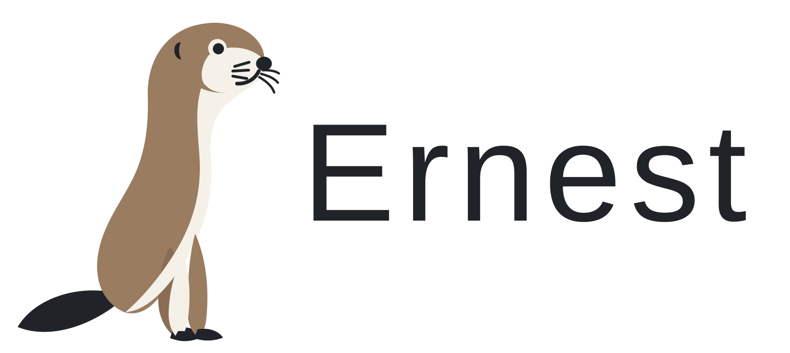

A functional language on BEAM
Functions. Processes. Explicit contracts.
Ernest combines inferred types with typed process communication. Start with a short tour, read the programming guide, or examine the language report.
A small example
A shape carries the operation that knows its representation.
type Shape = Shape(name : String, area : () -> Float)
fn square(side : Float) -> Shape =
Shape(name = "square", area = fn() = side * side)What to look for
- Inferred types
- Function types checked without annotating every binding.
- Typed mailboxes
- Message types describe what a process accepts.
- Explicit process effects
- Mailbox effects appear in function types.
- Reply ownership
- Reply obligations are checked through ownership rules.
Use the shell
A terminal in your browser, running Ernest on the server. No local installation required.
Open the shellProject status
Ernest is under development. The published site should state the release, supported features and experimental work here.